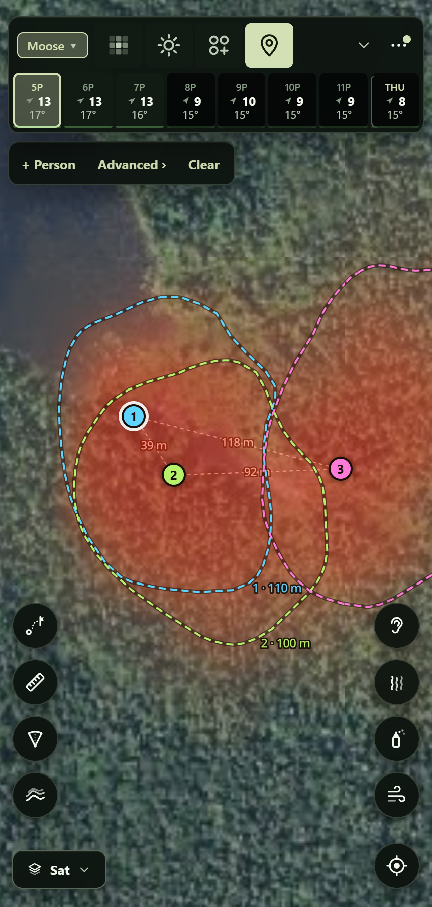
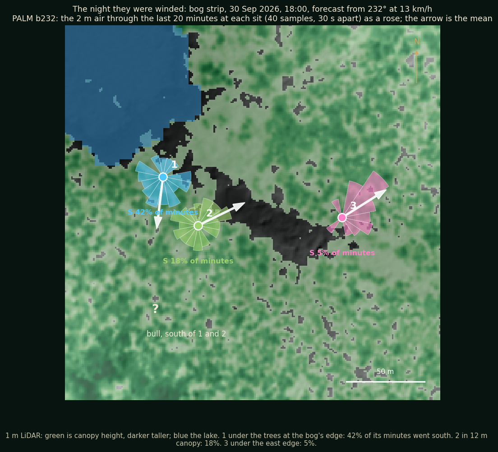
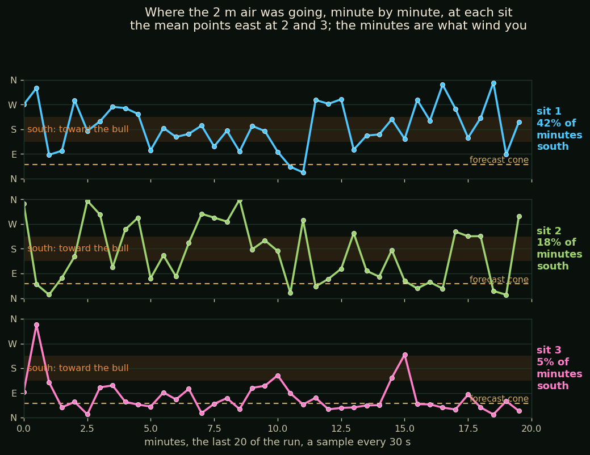
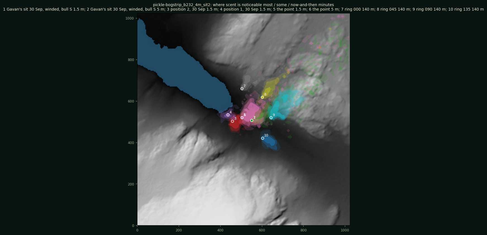
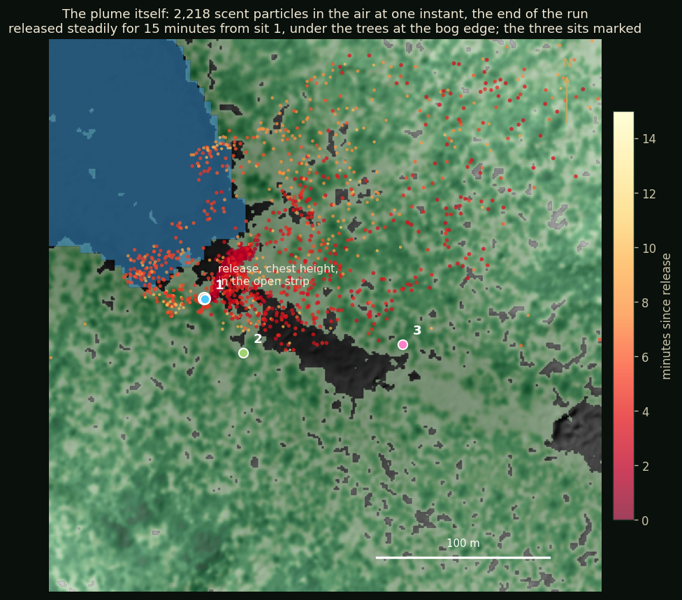
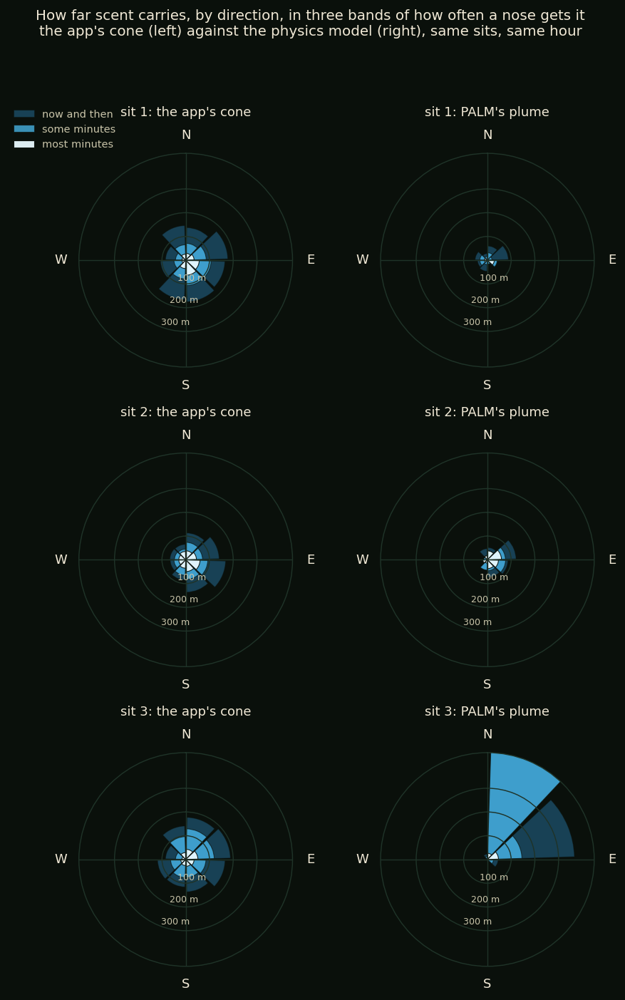

A night that went wrong, run through the model
Winded at the Strip
Three of us sat an hour in a bog strip north-east of Pickle Lake. The forecast had the wind from the south-west. A bull came in from the south, and he winded us. Here is the night run through the physics, over the real trees, and what it says about who he smelled and why the forecast cone would have called all three of us safe.
The Night
30 September, six in the evening, an hour before last light. The strip is a 60 m band of open bog running north-west to south-east between walls of 14 m spruce, with the lake at its north-west end. The HRDPS forecast for 18:00 said wind from 232° at 13 km/h, which is nearly square across the strip.
We spread out. 1 sat at the bog's edge by the lake, just under the trees. 2 sat 45 m south of him, in 12 m canopy on the strip's south wall. I was 3, 90 m further east, under the trees at the strip's east edge. My powder checks that evening went toward south-east, then east, then east; they are the ones in the wind checks article.
What Happened
1 and 2 heard the bull to their south. I never did. We sat on through the hour, and then he winded us and was gone. A straight forecast cone from 232° points north-east, up the strip. By that cone, a bull to the south of any of us was in clean air.

What the Model Says
We ran the evening through PALM, a large-eddy model that solves the air cell by cell over the 1 m LiDAR ground, with every stand of trees as drag, at 4 m cells over a kilometre box, forced by that forecast. It gives the air at head height every 30 seconds through the last 20 minutes, not just the mean. The box's own wind came out from 233°: the direction held to a degree. Its speed over the trees came out at 8 km/h against the forecast's 13, so the speeds below are the model's, not the night's.

| sit | where | mean air at 2 m | minutes going south |
|---|---|---|---|
| 1 | under the trees at the bog's edge | toward 187° at 0.9 km/h | 42% |
| 2 | 12 m canopy, the south wall | toward 064° at 1.1 km/h | 18% |
| 3 | under the east edge | toward 058° at 1.8 km/h | 5% |
Out in the open strip the air ran east, steered part way along the strip's line, which is the sense my checks logged. At the bog's edge under the trees it did something else: near calm, and drifting south along the lake shore. At 1 the mean itself pointed at the bull, and 42% of the minutes went that way. At 2, one minute in five. At me, one in twenty, which fits never hearing him.
So the model's answer is not that the cone pointed the wrong way. It is that there is no one cone. The strip, the wall and the shore each had their own air, a few tens of metres apart, and the one that mattered was the slowest.




| sit | scent reaches south, most / some / now-and-then minutes | runs toward |
|---|---|---|
| 1 | 12 / 32 / 47 m | 212° close in, then east |
| 2 | 37 / 46 / 73 m | 104°, then east |
| 3 | 0 / 0 / 0 m | 057° |
So from where 1 and 2 sat the model puts scent on the ground to the south, but only 30 to 70 m of it, in a pool that the strip's air then takes east. A bull further south than that was not in this run's scent. The air's rose at 1 said south for 42% of the minutes; the plume says most of that scent never left the pool. Two things decide which is closer to the night: how far out the bull was when 1 and 2 first heard him, and what the cooling evening air did to that pool, which is the stable run still to come. At a kilometre an hour, scent released into those minutes travels 100 m in about seven, so a bull out to 150 or 200 m south of 1 had it for a good share of our hour. The run with scent released from each of our exact sits is in the queue, and we will put its reach beside how far out the bull was when 1 and 2 first heard him.
What Changes
- Minutes, not the mean, and a direction, not a ring. The app already draws how often a nose gets scent rather than one average plume. In this air it drew rings, because its spread rules add up to "anywhere" once the wind is light under trees. The model says the air at each sit had a direction, a different one at each, a few tens of metres apart. The spread rules are being reset from the runs so that light air under canopy gets a direction and a drift, not a ring.
- The edge of the trees is its own place. The app treats the canopy as a direction nudge. The model says the floor under a canopy edge holds near-calm air that drifts along the edge, here down the shore, and keeps scent close. That becomes a rule of its own: slower, wandering, along the edge.
- A strip steers, and it steers more than the neutral run shows. The model turned the air 20 to 30° toward the strip's line; my checks felt more. Both evenings in this strip say the same, so the steering term is being set from the runs and the checks together, and the stable evening version is the next run booked.
- Direction from the checks, speed from instruments. My powder is trusted for where the air goes and treated as a coarse bin for how hard. The model's speeds are judged against stations, not against a feeling.
What the model cannot say yet: it ran the evening as neutral air, and six o'clock at the end of September is the start of the stable evening. 1 sat in the lowest ground of the three, where cooling air pools. Whether that makes the shore's southward drift stronger or weaker is a question with a run booked against it.
By the forecast cone, all three of us were safe. By the model over the real trees, one of us had his scent on the bull for 25 minutes of the hour.
See where your scent is really going.
Groundwind takes the HD forecast down to head height over the 1 m LiDAR ground and every stand of trees, and draws your cone as the share of minutes a nose gets your scent. Every night like this one tunes it.
Where the numbers come from
The run is our own, on public data and an open model.
- Maronga, B. et al. 2020. Overview of the PALM model system 6.0. Geoscientific Model Development 13: 1335–1372. The large-eddy model, with its plant canopy and particle models, GPL-3.
- Natural Resources Canada. High Resolution Digital Elevation Model (HRDEM), 1 m, White Lake 2021. Open Government Licence, Canada The ground and the trees, from LiDAR.
- Environment and Climate Change Canada. High Resolution Deterministic Prediction System (HRDPS). Free The forecast the run was forced with, 232° at 13 km/h for 18:00 on 30 September.